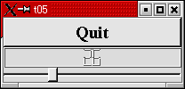
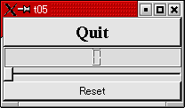
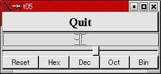

トップページ＞＞＞
「ぷろぐらみんぐ」目次＞＞＞
「Qt Tutorial Index Page」
Chapter 5: Building Blocks
初版作成：2002/12/31
- ソースコード
- 解説
- コンパイル・動作確認
- いじくりまわす

今回の作例では、二つのウィジェットのシグナルとスロットのコネクト例を示します。それプラスちょっとした
サイズ変更イベント（もどき）の実装方法です。
上に示すのが実行結果で、下のスライダーみたいなやつをマウスでドラッグすると、スライダーの位置に応じて
0から99まで、真ん中のLCDカウンタみたいなのが変化します。上のQuitボタンをクリックすると終了します。
つまりですね。スライドバーがマウスドラッグにより移動される時に発生するシグナルと、LCD表示ウィジェット
が備えている値表示用スロットをつなげるわけです。
LCD風に数値を表示するウィジェットはQt独特のものですね。では、下にソースを示します。
#include <qapplication.h>
#include <qpushbutton.h>
#include <qslider.h>
#include <qlcdnumber.h>
#include <qfont.h>
#include <qvbox.h>
class MyWidget : public QWidget
{
public:
MyWidget( QWidget *parent=0, const char *name=0 );
};
MyWidget::MyWidget( QWidget *parent, const char *name )
: QWidget( parent, name )
{
QPushButton *quit = new QPushButton( "Quit", this, "quit" );
quit->setFont( QFont( "Times", 18, QFont::Bold ) );
connect( quit, SIGNAL(clicked()), qApp, SLOT(quit()) );
QLCDNumber *lcd = new QLCDNumber( 2, this, "lcd" );
QSlider * slider = new QSlider( Horizontal, this, "slider" );
slider->setRange( 0, 99 );
slider->setValue( 0 );
connect( slider, SIGNAL(valueChanged(int)), lcd, SLOT(display(int)) );
}
int main( int argc, char **argv )
{
QApplication a( argc, argv );
MyWidget w;
a.setMainWidget( &w );
w.show();
return a.exec();
}
目次に戻る
それではポイント部分の解説を行っていきます。
シグナルとスロットについての説明は相変わらず省略します。というか、connectの使い方の一例として
見ていただければ・・・ってな感じです。
#include <qapplication.h>
#include <qpushbutton.h>
#include <qslider.h>
#include <qlcdnumber.h>
#include <qfont.h>
#include <qvbox.h>
インクルードファイルとして qslider.h, qlcdnumber.h が登場しています。名前から想像がつく通り、
qslider.h が QSliderウィジェットを宣言していて、qlcdnumber.h が QLCDNumberウィジェットを宣言しています。
QVBox(qvbox.h) はウィジェット配置を簡便にするために使用しました。
class MyWidget : public QVBox
{
public:
MyWidget( QWidget *parent=0, const char *name=0 );
};
MyWidget::MyWidget( QWidget *parent, const char *name )
: QVBox( parent, name )
{
MyWidgetはQVBoxから派生させています。QVBoxを使えば、子ウィジェットの配置やウインドウサイズの変更
が既に実装済みですのでわざわざ自前で用意する必要がありません。
QLCDNumber *lcd = new QLCDNumber( 2, this, "lcd" );
lcd はQLCDNumberウィジェットのインスタンス（こういう表現方法は正しいのかな？）になります。
QLCDNumberってゆーのは、数値を７セグメントLCD風に表示してくれるウィジェットです。７セグメントLCDが何なのか
わからない方には、一昔前のデジタル時計。あるいはストップウォッチとかで数値が表示される、あんな感じです。
冒頭のスナップショットみればまあ、納得いただけるかな、と。
今回はコンストラクタを利用して二桁の数値を表示できるようにしました。んでもって親ウィジェットは this 、すなわち
MyWidgetであり、QVBoxであります。んでもってNameプロパティは"lcd"になります。
QSlider * slider = new QSlider( Horizontal, this, "slider" );
slider->setRange( 0, 99 );
slider->setValue( 0 );
QSliderは古典的なスライダーウィジェットです。まあ、見りゃわかります・・・よね？Windowsでもよく見かけるやつです。
マウスドラッグによって指定された整数値の範囲内で指定するウィジェットです。
今回は数値範囲を 0 - 99 にした、水平タイプのスライダーにしました。んで、デフォルト値は0です。
QSliderっちゅーのは QRangeControl という、整数値をある範囲内で指定する非（かな？多分。）Xウィジェットを派生しているみたいです。
QRangeControlは多分GUIを持っていないでしょう。QRangeControl自体はシグナルもスロットも持っていません。
元々QScrollBarウィジェットのために作られたようですが、 汎用化が進みその他QSliderやQSpinBoxなんかにも使われている
ようです。
setRange, setValue 共に元々はQRangeControlのパブリックメンバ関数です。
connect( slider, SIGNAL(valueChanged(int)), lcd, SLOT(display(int)) );
ここで QSlider のvalueChanged(int)シグナルと、QLCDNumber のdisplay(int)スロットを結びつけているわけです。
ここで注意してほしいのは結びつけたからと言って、valueChanged(int)シグナルがdisplay(int)スロットにのみつながる
わけではないという点です。
シグナルは全てのウィジェットにブロードキャストされますし、スロットはブロードキャストされた全てのシグナルを待ち構え
ています。ブロードキャストのおかげで、connectしたウィジェットはお互いの事を知らなくてもすむわけです。
ここら辺はいずれきっちりとHackしてみるつもりですので、今はこれくらいで我慢してください。私もまだ分かんないですし。
とりあえず使い方に慣れて下さい。
スロットは普通のC++で実装できます。その気になれば自分でスロットを勝手に定義して、connectする事も可能です。
目次に戻る
んじゃあ、コンパイルしてみましょう。
[fenjin@murasame t05]$ vi t05.cpp
[fenjin@murasame t05]$ progen -n t05 -o t05.pro
[fenjin@murasame t05]$ tmake -o Makefile t05.pro
[fenjin@murasame t05]$ make
g++ -c -pipe -Wall -W -O2 -DNO_DEBUG -I/usr/lib/qt/include -o t05.o t05.cpp
g++ -o t05 t05.o -L/usr/lib/qt/lib -L/usr/X11R6/lib -lqt -lXext -lX11 -lm
[fenjin@murasame t05]$ ls
Makefile t05* t05.cpp t05.o t05.pro
んで、実行ファイル t05 を実行すると冒頭に示したようなウインドウが表示されるわけです。上部のQuitボタンをクリック
するとアプリケーションは終了します。
目次に戻る
んーっと・・・まあ、いろいろあるんですが・・・。
とりあえず値のリセットボタンを作ってみましょうか。
コンストラクタで、QHBoxを追加してそこにリセットボタンをつっこみましょう。
んでもって、connectでclicked()と、display(int)をくっつけてみますか。
修正前：
slider->setValue(0);
connect(slider, SIGNAL(valueChanged(int)), lcd, SLOT(display(int)));
修正後：
slider->setValue(0);
QHBox *hbox = new QHBox(this,"hbox");
QPushButton *reset = new QPushButton("Reset", hbox, "reset");
connect(reset, SIGNAL(clicked()), lcd, SLOT(display(0)));
connect(slider, SIGNAL(valueChanged(int)), lcd, SLOT(display(int)));
さて、結果は・・・コンパイルはできます。が、下に示すようなエラーメッセージがコンソールに流れてきます。
[fenjin@murasame t05]$ make
g++ -c -pipe -Wall -W -O2 -DNO_DEBUG -I/usr/lib/qt/include -o t05.o t05.cpp
g++ -o t05 t05.o -L/usr/lib/qt/lib -L/usr/X11R6/lib -lqt -lXext -lX11 -lm
[fenjin@murasame t05]$ ./t05
QObject::connect: No such slot QLCDNumber::display(0)
QObject::connect: (sender name: 'reset')
QObject::connect: (receiver name: 'lcd')
どうやらdisplay(0)というスロットはありませんよ、と言っているようです。
そういえば、今までconnectするシグナルやスロットは、引数とする値の型、は指定してきましたが引数名などは指定してきません
でした。どうやらシグナルとスロットは、引数の型やタイプを一致させた方が良いみたいです（未検証：正確なところはもう
ちょっと勉強する必要あり）。
となると・・・どうやってresetを実装しましょう。
トリッキーな方法ですが、MyWidgetクラスにスロットslotReset(void)とシグナルsignalReset(int)を追加します。
slotReset()はリセット用に生成したボタンのclicked()シグナルと受け取ります。
slotReset()は内部でsignalReset(int)シグナルを発行します。その際、引数に0を指定します。
それに加えて、signalReset(int)をQLCDNumberのdisplay(int)とQSliderのsetValue(int)スロットにつなげます。
・・・何かいろいろドキュメント見てると、今回の「いじくりまわす」実験、本来ならTutorial 8とか9で例示している部分
らしいです。うはあ。とにかくソースコードです。
変更前：
class MyWidget : public QWidget
{
public:
MyWidget( QWidget *parent=0, const char *name=0 );
};
変更後：
class MyWidget : public QVBox
{
Q_OBJECT
public:
MyWidget(QWidget *parent=0, const char *name=0);
signals:
void signalReset(int);
public slots:
void slotReset(void);
};
signalsやslotsという新しい宣言がでてきました。これが、シグナルやスロットを定義するためにQtが拡張した
CPPのキーワードです。
Q_OBJECTというキーワード（実はマクロ）も新しくでてきました。これもQt独自の拡張です。これを追加することによってシグナルと
スロットの機能を実装できるようになるので忘れないで下さい。
もう一つ重要な注意点としてはスロットやシグナルとして宣言する場合、戻り値はvoidでなければなりません。
ここまでがクラス宣言部の変更です。続いて実装部の変更を示します。
修正前：
QHBox *hbox = new QHBox(this,"hbox");
QPushButton *reset = new QPushButton("Reset", hbox, "reset");
connect(reset, SIGNAL(clicked()), lcd, SLOT(display(0)));
connect(slider, SIGNAL(valueChanged(int)), lcd, SLOT(display(int)));
}
修正後：
QHBox *hbox = new QHBox(this,"hbox");
QPushButton *reset = new QPushButton("Reset", hbox, "reset");
connect(reset, SIGNAL(clicked()), this, SLOT(slotReset()));
connect(this, SIGNAL(signalReset(int)), lcd, SLOT(display(int)));
connect(this, SIGNAL(signalReset(int)), slider, SLOT(setValue(int)));
connect(slider, SIGNAL(valueChanged(int)), lcd, SLOT(display(int)));
}
void MyWidget::slotReset(void)
{
emit signalReset(0);
}
シグナルとして宣言した関数は実装してはいけません。
emit というのもQt独自の拡張（マクロかも。要調査）です。
これによって、任意にシグナルを発生させることができます。Win32APIではSendMessage()みたいなもんでしょうか。
三つのconnectによって、リセットボタンが押されてから QLCDNumber と QSlider がリセット(0にセット)されるまでの
シグナル - スロットの連鎖を実現しています。
さて・・・これでmakeをぶったたいてみると・・・。
[fenjin@murasame t05]$ make
g++ -c -pipe -Wall -W -O2 -DNO_DEBUG -I/usr/lib/qt/include -o t05.o t05.cpp
g++ -o t05 t05.o -L/usr/lib/qt/lib -L/usr/X11R6/lib -lqt -lXext -lX11 -lm
t05.o: In function `MyWidget::MyWidget(QWidget *, char const *)':
t05.o(.text+0x28): undefined reference to `MyWidget virtual table'
t05.o(.text+0x2f): undefined reference to `MyWidget::QPaintDevice virtual table'
t05.o: In function `MyWidget::slotReset(void)':
t05.o(.text+0x44d): undefined reference to `MyWidget::signalReset(int)'
collect2: ld returned 1 exit status
make: *** [t05] エラー 1
・・・エラーがでちゃいました。しかも、宣言したはずのないMyWidget virtual tableなんていうものまで出現しています。
実はQtにはメタオブジェクトコンパイラ(Meta Object Compiler : moc)という機能が存在します。
シグナルとスロットに付随するQt独自のC++の拡張は、このmocによって通常のCPPに翻訳されるわけです（正確じゃないかも。
要調査）。「rpm -ql qt-devel」でパッケージに「moc」が含まれているのを思い出すか、確認してみて下さい。
というわけでmocを使って翻訳してみましょう。
[fenjin@murasame t05]$ moc -o moc_t05.cpp t05.cpp
[fenjin@murasame t05]$ ls
Makefile moc_t05.cpp t05.cpp t05.o t05.pro
んで、moc_t05.cppの中身です。
/****************************************************************************
** MyWidget meta object code from reading C++ file 't05.cpp'
**
** Created: Tue Dec 31 21:35:01 2002
** by: The Qt MOC ($Id: qt/src/moc/moc.y 2.3.1 edited 2001-04-23 $)
**
** WARNING! All changes made in this file will be lost!
*****************************************************************************/
#if !defined(Q_MOC_OUTPUT_REVISION)
#define Q_MOC_OUTPUT_REVISION 9
#elif Q_MOC_OUTPUT_REVISION != 9
#error "Moc format conflict - please regenerate all moc files"
#endif
#include <qmetaobject.h>
#include <qapplication.h>
const char *MyWidget::className() const
{
return "MyWidget";
}
QMetaObject *MyWidget::metaObj = 0;
void MyWidget::initMetaObject()
{
if ( metaObj )
return;
if ( qstrcmp(QVBox::className(), "QVBox") != 0 )
badSuperclassWarning("MyWidget","QVBox");
(void) staticMetaObject();
}
#ifndef QT_NO_TRANSLATION
QString MyWidget::tr(const char* s)
{
return qApp->translate( "MyWidget", s, 0 );
}
QString MyWidget::tr(const char* s, const char * c)
{
return qApp->translate( "MyWidget", s, c );
}
#endif // QT_NO_TRANSLATION
QMetaObject* MyWidget::staticMetaObject()
{
if ( metaObj )
return metaObj;
(void) QVBox::staticMetaObject();
#ifndef QT_NO_PROPERTIES
#endif // QT_NO_PROPERTIES
typedef void (MyWidget::*m1_t0)();
typedef void (QObject::*om1_t0)();
m1_t0 v1_0 = &MyWidget::slotReset;
om1_t0 ov1_0 = (om1_t0)v1_0;
QMetaData *slot_tbl = QMetaObject::new_metadata(1);
QMetaData::Access *slot_tbl_access = QMetaObject::new_metaaccess(1);
slot_tbl[0].name = "slotReset()";
slot_tbl[0].ptr = (QMember)ov1_0;
slot_tbl_access[0] = QMetaData::Public;
typedef void (MyWidget::*m2_t0)(int);
typedef void (QObject::*om2_t0)(int);
m2_t0 v2_0 = &MyWidget::signalReset;
om2_t0 ov2_0 = (om2_t0)v2_0;
QMetaData *signal_tbl = QMetaObject::new_metadata(1);
signal_tbl[0].name = "signalReset(int)";
signal_tbl[0].ptr = (QMember)ov2_0;
metaObj = QMetaObject::new_metaobject(
"MyWidget", "QVBox",
slot_tbl, 1,
signal_tbl, 1,
#ifndef QT_NO_PROPERTIES
0, 0,
0, 0,
#endif // QT_NO_PROPERTIES
0, 0 );
metaObj->set_slot_access( slot_tbl_access );
#ifndef QT_NO_PROPERTIES
#endif // QT_NO_PROPERTIES
return metaObj;
}
// SIGNAL signalReset
void MyWidget::signalReset( int t0 )
{
activate_signal( "signalReset(int)", t0 );
}
・・・QMetaObjectとか言うクラスをあれこれしてるみたいですが、まだよくわかりません。
とりあえず最後の最後で signalResetシグナルが実装されています。
プログラマー側でシグナルを実装する必要がない、という理由はどうやらmocが自動で生成してくれるかららしいですね。
ですが、翻訳といっても全てではないようです。シグナルとスロットに直接関わってくる部分のみの翻訳のようです。
ということは・・・出力はどうみてもCPPソースだし・・・リンクするならexternとかありそうだけどそれもないし・・・
どうやら#includeするためのもののようです。
というわけで、t05.cppの最後の方にこんなのを付け足しておきました。
#include "moc_t05.cpp"
さて、それでは改めてmakeしてみますと・・・どうにか成功するはずです。下に実行時の画面を示します。

ResetボタンをクリックするとLCD表示、スライダー共にゼロに戻ります。
ちなみに、mocファイルの#includeする位置ですが・・・MyWidgetクラスを参照するためか、当然のごとくclass MyWidgetの宣言
部より前はNGでした。宣言部以降なら、どこでも大丈夫でした。
とはいえどプログラムの規模が大きくなってくるとソースを分ける必要もでてきます。わかりやすさのためにも、ソースコード
末尾に付け加えるようにした方が私の好みです。
とにかく、これでスロットとシグナルの追加もできるようになりました。
ところでQLCDNumberウィジェットのドキュメントには、スロットとしてこんなのが載ってました。
virtual void setHexMode ()
virtual void setDecMode ()
virtual void setOctMode ()
virtual void setBinMode ()
どうやら数値の基数を選択するためのスロットで、setMode()メソッドを簡易的にするためのものらしいです。
いかにも「ボタンみたいなのとconnectして下さいね」と言わんばかりのスロットじゃあございませんか。ドキュメントの方にも
・・・
void QLCDNumber::setHexMode () [virtual slot]
Calls setMode( HEX ). Provided for convenience (e.g. for connecting buttons to this).
と書いてあるし。というわけで、QHBoxの中にボタンを４つ付け足します。んで、それぞれのclicked()をset***Mode()スロットに
つなげましょう。下に修正箇所を示します。
修正前：
connect(this, SIGNAL(signalReset(int)), slider, SLOT(setValue(int)));
connect(slider, SIGNAL(valueChanged(int)), lcd, SLOT(display(int)));
修正後：
connect(this, SIGNAL(signalReset(int)), slider, SLOT(setValue(int)));
QPushButton *btn_hex = new QPushButton("Hex", hbox, "btn_hex");
connect(btn_hex, SIGNAL(clicked()), lcd, SLOT(setHexMode()));
QPushButton *btn_dec = new QPushButton("Dec", hbox, "btn_dec");
connect(btn_dec, SIGNAL(clicked()), lcd, SLOT(setDecMode()));
QPushButton *btn_oct = new QPushButton("Oct", hbox, "btn_oct");
connect(btn_oct, SIGNAL(clicked()), lcd, SLOT(setOctMode()));
QPushButton *btn_bin = new QPushButton("Bin", hbox, "btn_bin");
connect(btn_bin, SIGNAL(clicked()), lcd, SLOT(setBinMode()));
connect(slider, SIGNAL(valueChanged(int)), lcd, SLOT(display(int)));
mocファイルを作り直す必要はありませんでした。即makeすればおしまいです。下に実行時の画面を示します。

さてこのままですと、たとえばOctやBinモードで表示してみると途中でカウントアップが止まってしまいます。
二桁では表示しきれなくなるからです。
実は、QLCDNumberにはこのようなときに overflow() シグナルが発生する仕掛けが組み込まれています。
というわけで、overflow()シグナルが発生すると桁数を一つ増やす処理を行うスロットを追加してみましょう。
また overflow() シグナルが発生したことを確認するためにメッセージボックスも表示させましょう。
変更する内容は下のようになります。
・overflow()メソッドに応答するための slotOverflow() スロットをMyWidgetに追加する（mocの再生成が必要）。
・MyWidgetのコンストラクタで overflow() シグナルと slotOverflow() をconnect()する。
・slotOverflow()内ではまずQMessageBoxクラスのメンバを使ってメッセージボックスを表示する。
・その後、QLCDNumber::numDigits()で現在の表示桁数を取得し、+1した値をQLCDNumber::setNumDigits(int)する。
QMessageBoxについてはこの後説明します。とりあえず qmessagebox.h をインクルードするのを忘れないで下さい。
というわけで・・・下に変更箇所と追加部分を示します。
追加部分その１：
#include <qmessagebox.h>
変更箇所その１：
（変更前）
public:
MyWidget(QWidget *parent=0, const char *name=0);
（変更後）
public:
MyWidget(QWidget *parent=0, const char *name=0);
QLCDNumber *buf_lcd;
変更箇所その２：
（変更前）
QLCDNumber *lcd = new QLCDNumber(2, this, "lcd");
（変更後）
QLCDNumber *lcd = new QLCDNumber(2, this, "lcd");
buf_lcd = lcd;
変更箇所その３：
（変更前）
public slots:
void slotReset(void);
（変更後）
public slots:
void slotReset(void);
void slotOverflow(void);
変更箇所その４：
（変更前）
connect(slider, SIGNAL(valueChanged(int)), lcd, SLOT(display(int)));
（変更後）
connect(slider, SIGNAL(valueChanged(int)), lcd, SLOT(display(int)));
connect(lcd, SIGNAL(overflow()), this, SLOT(slotOverflow()));
追加部分その２：
void MyWidget::slotOverflow(void)
{
QMessageBox::warning(this, "Caption: lcd->overflow signals",
"Text: lcd NumDitits Overflow. setNumDigits() is called.",
0, 0);
buf_lcd->setNumDigits(buf_lcd->numDigits()+1);
}
mocの再生成を忘れないで下さい。
だいぶデフォルトとは変わってきましたね。
buf_lcdというQLCDNumberへのポインタを新たにpublicメンバとして追加しています。これはslotOverflow()スロット内から
QLCDNumberのインスタンスへアクセスするために用意したものです。
QMessageBoxですが、それ自体一つのQtウィジェットになっているとはいえ、そのメンバ関数だけでもメッセージボックスを
表示することが可能なようです。QtドキュメントでQMessageBoxで引けば載っています。
Static Public Members
int information ( QWidget * parent, const QString & caption, const QString & text, int button0, int button1=0, int button2=0 )
int information ( QWidget * parent, const QString & caption, const QString & text, const QString & button0Text = QString::null, const QString & button1Text = QString::null, const QString & button2Text = QString::null, int defaultButtonNumber = 0, int escapeButtonNumber = -1 )
int warning ( QWidget * parent, const QString & caption, const QString & text, int button0, int button1, int button2=0 )
int warning ( QWidget * parent, const QString & caption, const QString & text, const QString & button0Text = QString::null, const QString & button1Text = QString::null, const QString & button2Text = QString::null, int defaultButtonNumber = 0, int escapeButtonNumber = -1 )
int critical ( QWidget * parent, const QString & caption, const QString & text, int button0, int button1, int button2=0 )
int critical ( QWidget * parent, const QString & caption, const QString & text, const QString & button0Text = QString::null, const QString & button1Text = QString::null, const QString & button2Text = QString::null, int defaultButtonNumber = 0, int escapeButtonNumber = -1 )
void about ( QWidget * parent, const QString & caption, const QString & text )
void aboutQt ( QWidget * parent, const QString & caption=QString::null )
QPixmap standardIcon ( Icon icon, GUIStyle style )
といった具合です。このように、わざわざインスタンスを生成せずとも簡便にメッセージボックスを生成できます。
ただ、何かWindowsのMessageBox()APIよりかは複雑そうです。あっちはMB_****だけでメッセージボックスの種類やアイコンを
指定できましたからね〜〜。
とにかく、今回はさすがにここまででしょう。本当は基数を指示するボタンなんかもラジオボタンとかにしてみるとさらに
わかりやすく、おもしろそうなんですが・・・これ以上長くなってしまうと原文翻訳といじくりまわしのどっちが本題かわからなく
なりそうなので、お休みにします。
というか、今これ書いてる場所は年末年始帰省で里帰りした先の実家で、参考文献ナッシングな感じ。新しいウィジェットを
Qtドキュメントのみで覚えるのはさすがにきついし、しかも今午前５時だし。
そういうわけで、今回はここまで！！なかなか濃い実験になりました。お疲れさんです。
目次に戻る
トップページ＞＞＞
「ぷろぐらみんぐ」目次＞＞＞
「Qt Tutorial Index Page」